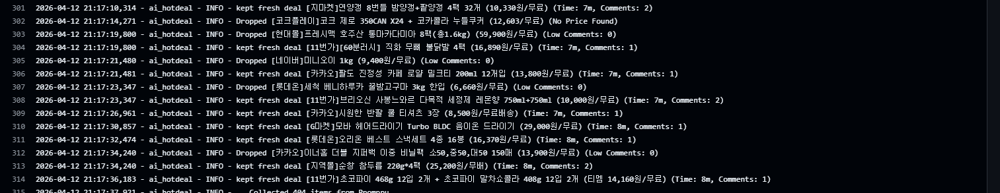
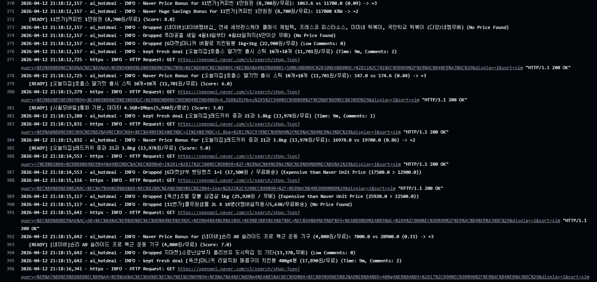

배경 클릭 또는 Esc로 닫기
kept fresh deal과 [READY]는 서로 다른 단계입니다 · processor.py / run_once.py
한눈에 비교 — kept fresh deal vs [READY]
| 항목 | kept fresh deal (로그) |
[READY] (콘솔) |
|---|---|---|
| 출력 | logger.info 등 앱 로그 |
print — run_once.py에서만 |
| 코드 위치 | processor.py · 하드필터 댓글 수 조건 분기 안 |
Processor.process_deal 호출이 끝난 뒤, 상태가 READY일 때 |
| 파이프라인 단계 | 필터 초반 — 댓글 < 3이어도 신규 예외(30분·댓글≥1)면 이 분기에서만 드롭하지 않고 다음 하드 검사로 넘김 | 전체 처리 끝 — 하드 → 소프트 스코어 → 점수 임계(score ≥ 0)까지 통과 |
| 조건·의미 | 원칙: 댓글 < 3이면 드롭 후보. 예외: 작성 30분 이내이고 댓글 ≥ 1이면 이 단계에서 드롭하지 않음. | deal.status = "READY" → LLM 분석 대기열. score < 0이면 DROP으로 끝남. |
| 관계 | 같은 딜에 대해 kept가 찍혔다고 곧 [READY]는 아님 — 이후 가격·스코어에서 Dropped될 수 있음. 반대로 댓글 ≥ 3이면 kept 로그 없이도 [READY]까지 갈 수 있음. |
|
실행 로그 캡처 예시

① Dropped / kept fresh deal

②[READY]
배경 클릭 또는 Esc로 닫기